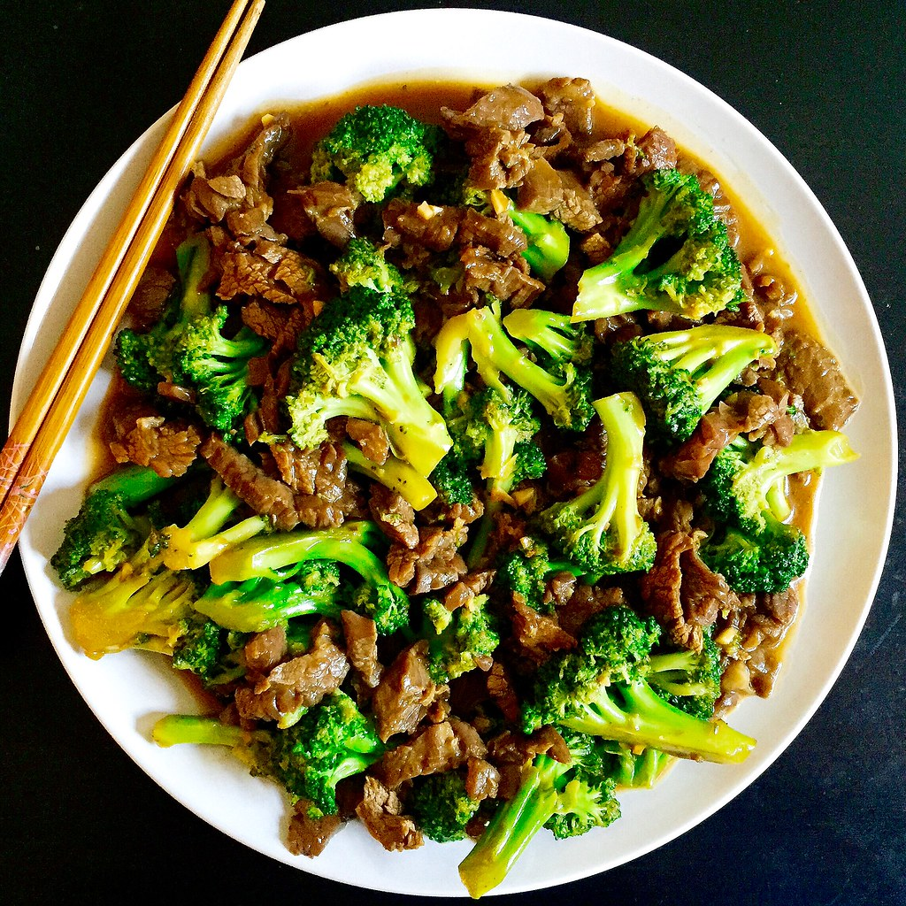

Beef Stir Fry

Description:
Ever just have a bunch of random, worthless, and irrelevant vegetables just hanging around in your house? Happens to the best of us. Fortunately, we can whip up just the thing to fix this issue with the aid of a little bit of beef, and determination! Today, I will be teaching you how to make an awesome stir-fry.
Ingredients:
You can honestly use any veggies these are just what I typically have
- 2 tbsp vegetable oil
- 1 pound beef sirloin, cut into 2 inch strips
- 1 1/2 cups broccoli
- 1 red bell pepper, cut into strips
- 2 carrots, thinly sliced
- 1 green onion, chopped
- 1 tsp minced garlic
- 2 tbsp soy sauce
- 2 tbsp toasted sesame seeds
Steps :
- Gather and prep all ingredients
- Cook and stir the beef with the vegetable oil over medium high heat until browned (3-4 minutes)
- Move the beef to side and cook the vegetables for around 2 minutes
- Stir the beef back in, along with the soy sauce and sesame seeds. Continue to cook and stir until the vegetables are tender, about 2 more minites
- Serve hot (ideally over rice) and enjoy!